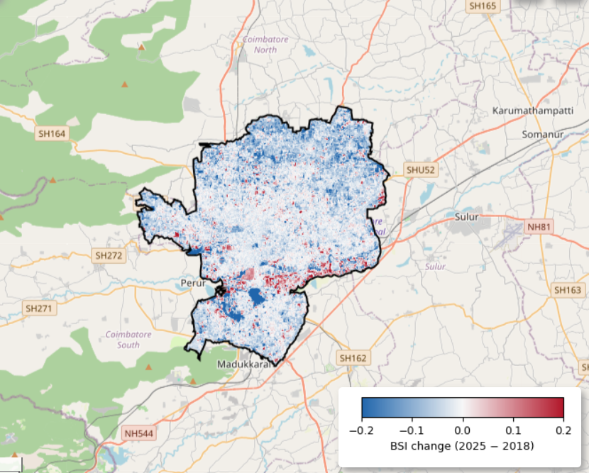

THE RESEARCH QUESTION
How did the bare and exposed-surface signal change?
This project compares BSI composites for the same January–March period in each year from 2018 through 2025. BSI is a spectral indicator, not a direct measurement of bare-soil area.
01 / TEMPORAL PATTERN
Annual mean BSI
Select a point to inspect a year. Values are unitless.
Select a year on the chart to inspect its mean BSI.
02 / SPATIAL PATTERN
Where did BSI change?
ΔBSI = BSI₂₀₂₅ − BSI₂₀₁₈

Blue indicates lower BSI in 2025; red indicates higher BSI. The comparison uses pixels with at least one valid observation in both endpoint years.
03 / INTERPRETATION
Overall decline, with annual fluctuations
Lower endpoint mean
Mean BSI decreased from 0.1013 in 2018 to 0.0657 in 2025.
Year-to-year variation
The lowest annual mean was 0.0553 in 2021. The index rose in 2022–2023 and declined again in 2024.
Spatially mixed change
The negative mean and median indicate an overall downward shift, while the standard deviation shows local variation.
A decline in BSI is a spectral change, not a land-area percentage. Changes may reflect exposed soil, vegetation, moisture, built surfaces or observation conditions. BSI alone cannot identify the cause.
04 / WORKFLOW
From satellite imagery to BSI change
Sentinel-2 Surface Reflectance Harmonized, filtered to Coimbatore and January 1–April 1 for each year.
SCL classes for no-data, defective pixels, cloud shadow, clouds, cirrus and snow were excluded.
A median composite was generated for each year, then BSI was calculated from SWIR1, red, NIR and blue bands.
BSI(2025) minus BSI(2018), using pixels with observations in both endpoint years.
BSI = ((B11 + B4) − (B8 + B2)) / ((B11 + B4) + (B8 + B2))B2 = blue · B4 = red · B8 = near-infrared · B11 = short-wave infrared 1
05 / TRANSPARENCY
Limitations and sources
- 2018 had fewer scenes in the January–March window than later years.
- The common mask requires at least one valid observation in each endpoint year; it does not equalize observation counts or acquisition dates.
- BSI is influenced by moisture, vegetation, soil type, built materials and observation conditions; it is not a direct land-cover map.
- Verify the ward-boundary source and vintage before describing it as an authoritative current boundary.
Satellite data: Sentinel-2 SR Harmonized ↗
Processing: Google Earth Engine ↗ · Hosting: GitHub Pages ↗